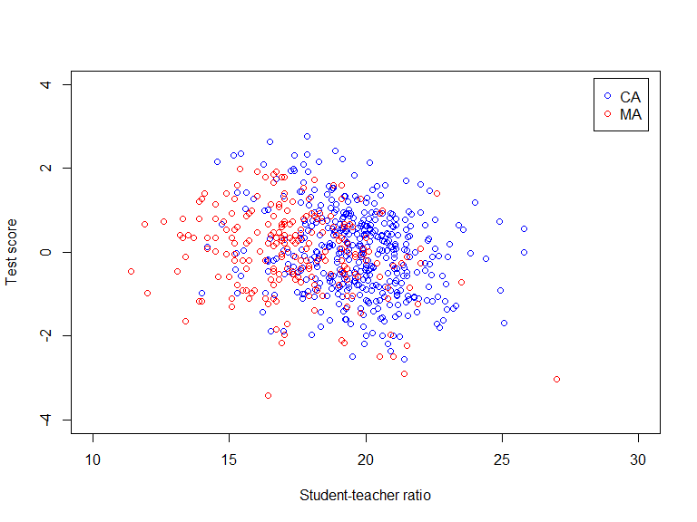
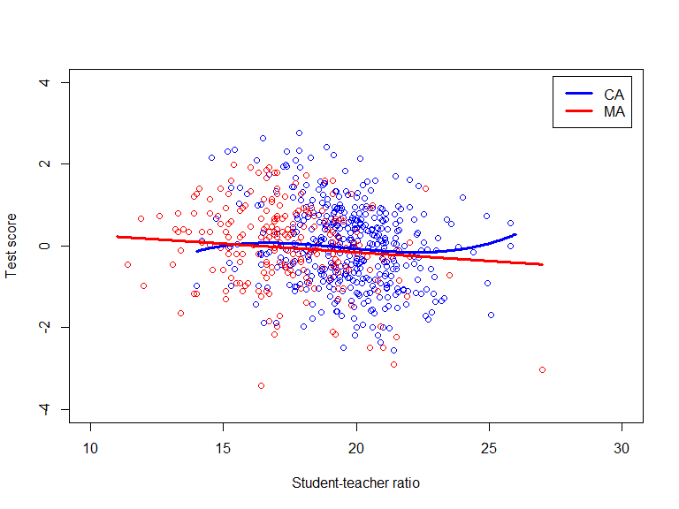

Based on Stock and Watson, ch. 9
What makes multiple regression based study (w/ purpose of estimating a causal effect) reliable or unreliable?
Internal validity: statistical inference valid for the population and setting studied
External validity: statistical inferences generalizes to other populations and settings
Omitted variable bias
Misspecification of functional form
Errors-in-variables
Sample selection issues
Simultaneous causality
Heteroskedasticity
Correlation of errors across observations
Differences in populations
Differences in settings
External validity myst be judged on a case-by-case basis using specific knowledge of the populations and settings studies and those of interest
CA test score data
Stanford 9 Achievement test of all 5th graders in CA
Test score is average of reading and math
Unit of observation: CA K-6 and K-8 school district
MA elementary school testing data
MCAS test of all 4th graders in MA public schools
Test score is sum of English, math, and science
Unit of observation: MA elementary school district
## Loading required package: car## Loading required package: carData## Loading required package: lmtest## Loading required package: zoo##
## Attaching package: 'zoo'## The following objects are masked from 'package:base':
##
## as.Date, as.Date.numeric## Loading required package: sandwich## Loading required package: survivallibrary(parameters) # Load parameters library
data(CASchools) # Load CASchools data
# Generate a couple of useful variables
CASchools$STR <- CASchools$students/CASchools$teachers # Student-teacher ratio
CASchools$Score <- (CASchools$read + CASchools$math)/2 # Student test score
CASchools$HiEL <- as.numeric(CASchools$english > median(CASchools$english)) # Indicator for districts w/ above median English learners
# Compute standardized CA score
CASchools$Score.std <- (CASchools$Score - mean(CASchools$Score))/sd(CASchools$Score)
data(MASchools) # Load MASchools data
# Generate a couple of useful variables
MASchools$Score <- MASchools$score4
MASchools$STR <- MASchools$stratio
MASchools$HiEL <- as.numeric(MASchools$english > median(MASchools$english)) # Indicator for districts w/ above median English learners
# Compute standardized MAscore
MASchools$Score.std <- (MASchools$Score - mean(MASchools$Score))/sd(MASchools$Score) # Table w/ descriptive statistics (Table 9.1 in Stock and Watson)
vars <- c("Score","Score.std", "STR", "english", "lunch", "income")
# Note: sapply() applies the function provided (e.g. mean) to every column of the data frame CASchools[, vars]; sapply() returns a vector
# Note: cbind() binds sequence of vectors/matrices/dataframes by column
dstat <- cbind(CA_mean = sapply(CASchools[, vars], mean),
CA_sd = sapply(CASchools[, vars], sd),
MA_mean = sapply(MASchools[, vars], mean),
MA_sd = sapply(MASchools[, vars], sd))
round(dstat, digits = 2) # Print to console, round to 2 digits## CA_mean CA_sd MA_mean MA_sd
## Score 654.16 19.05 709.83 15.13
## Score.std 0.00 1.00 0.00 1.00
## STR 19.64 1.89 17.34 2.28
## english 15.77 18.29 1.12 2.90
## lunch 44.71 27.12 15.32 15.06
## income 15.32 7.23 18.75 5.81
# Six regression models using CA data
lm1.CA <- lm(Score.std ~ STR, data = CASchools)
lm2.CA <- lm(Score.std ~ STR + english + lunch + log(income), data = CASchools)
lm3.CA <- lm(Score.std ~ STR + english + lunch + income +
I(income^2) + I(income^3), data = CASchools)
lm4.CA <- lm(Score.std ~ STR + I(STR^2) + I(STR^3) + english +
lunch + income + I(income^2) + I(income^3), data = CASchools)
lm5.CA <- lm(Score.std ~ STR + I(income^2) + I(income^3) +
HiEL:STR + lunch + income, data = CASchools)
lm6.CA <- lm(Score.std ~ STR + I(income^2) + I(income^3) +
HiEL + HiEL:STR + lunch + income, data = CASchools)
# gather robust standard errors
robSE.CA <- list(sqrt(diag(vcovHC(lm1.CA, type = "HC1"))),
sqrt(diag(vcovHC(lm2.CA, type = "HC1"))),
sqrt(diag(vcovHC(lm3.CA, type = "HC1"))),
sqrt(diag(vcovHC(lm4.CA, type = "HC1"))),
sqrt(diag(vcovHC(lm5.CA, type = "HC1"))),
sqrt(diag(vcovHC(lm6.CA, type = "HC1"))))
# Six regression models using MA data
lm1.MA <- lm(Score.std ~ STR, data = MASchools)
lm2.MA <- lm(Score.std ~ STR + english + lunch + log(income), data = MASchools)
lm3.MA <- lm(Score.std ~ STR + english + lunch + income +
I(income^2) + I(income^3), data = MASchools)
lm4.MA <- lm(Score.std ~ STR + I(STR^2) + I(STR^3) + english +
lunch + income + I(income^2) + I(income^3), data = MASchools)
lm5.MA <- lm(Score.std ~ STR + I(income^2) + I(income^3) +
HiEL:STR + lunch + income, data = MASchools)
lm6.MA <- lm(Score.std ~ STR + I(income^2) + I(income^3) +
HiEL + HiEL:STR + lunch + income, data = MASchools)
# gather robust standard errors
robSE.MA <- list(sqrt(diag(vcovHC(lm1.MA, type = "HC1"))),
sqrt(diag(vcovHC(lm2.MA, type = "HC1"))),
sqrt(diag(vcovHC(lm3.MA, type = "HC1"))),
sqrt(diag(vcovHC(lm4.MA, type = "HC1"))),
sqrt(diag(vcovHC(lm5.MA, type = "HC1"))),
sqrt(diag(vcovHC(lm6.MA, type = "HC1"))))# F-test for nonlinear effects of STR
linearHypothesis(lm4.CA, c("I(STR^2)=0", "I(STR^3)=0"), white.adjust = "hc1")## Linear hypothesis test
##
## Hypothesis:
## I(STR^2) = 0
## I(STR^3) = 0
##
## Model 1: restricted model
## Model 2: Score.std ~ STR + I(STR^2) + I(STR^3) + english + lunch + income +
## I(income^2) + I(income^3)
##
## Note: Coefficient covariance matrix supplied.
##
## Res.Df Df F Pr(>F)
## 1 413
## 2 411 2 3.4496 0.03268 *
## ---
## Signif. codes: 0 '***' 0.001 '**' 0.01 '*' 0.05 '.' 0.1 ' ' 1Model IV has the highest adjusted \(R^2\)
Controlling for percentage of English learners and the economic background of the students cuts the effect of class size on test scores by a factor 3
Evidence of nonlinear effect of class size on test scores:
Model III (linear) implies a unit reduction of \(STR\) increases \(Score\) by 0.030 of a SD of \(Score\), or \(\approx\) 0.6 points.
Model IV (cubic) implies a unit reduction of \(STR\) increases \(Score\) by 0.061 of a SD of \(Score\), or \(\approx\) 1.16 points.
# F-test for nonlinear effects of STR
linearHypothesis(lm4.MA, c("I(STR^2)=0", "I(STR^3)=0"), white.adjust = "hc1")## Linear hypothesis test
##
## Hypothesis:
## I(STR^2) = 0
## I(STR^3) = 0
##
## Model 1: restricted model
## Model 2: Score.std ~ STR + I(STR^2) + I(STR^3) + english + lunch + income +
## I(income^2) + I(income^3)
##
## Note: Coefficient covariance matrix supplied.
##
## Res.Df Df F Pr(>F)
## 1 213
## 2 211 2 0.4463 0.6406Model III has the highest adjusted \(R^2\)
Controlling for percentage of English learners and the economic background of the students cuts the effect of class size on test scores by a factor 2.5
No evidence of nonlinear effect of class size on test scores:
Model III (linear) implies a unit reduction of \(STR\) increases \(Score\) by 0.042 of a SD of \(Score\), or \(\approx\) 0.635 points.

Ex ante there were good reasons to be hopeful we could generalize CA results to MA
Same country (albeit a large one!)
Similar curriculum/similar instruction
Ex ante there were good reasons to be sceptical as well
Demographic differences
Socio-economic differences
On balance, our analysis of the MA data support external validity of the CA analysis (at least for MA)
Omitted variable bias
Misspecification of functional form
Errors-in-variables
Sample selection issues
Simultaneous causality
Heteroskedasticity
Correlation of errors across observations
The reliability of multiple regression based study (w/ purpose of estimating a causal effect) depends on its
Internal validity: statistical inference valid for the population and setting studied
External validity: statistical inferences generalizes to other populations and settings
Internal validity requires consistent/unbiased estimation of parameters and standard errors
External validity judged case-by-case using knowledge of population and settings studied and of interest